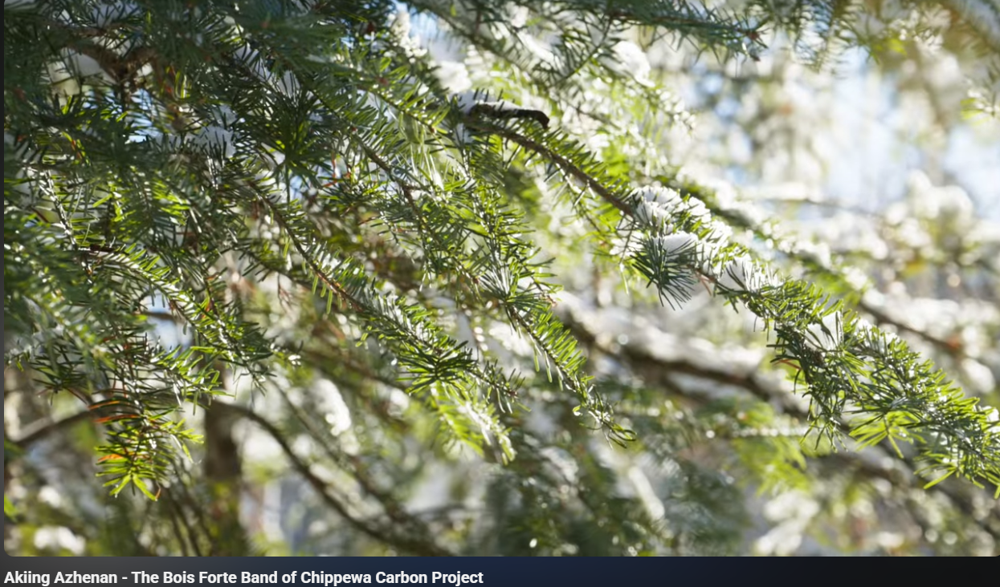
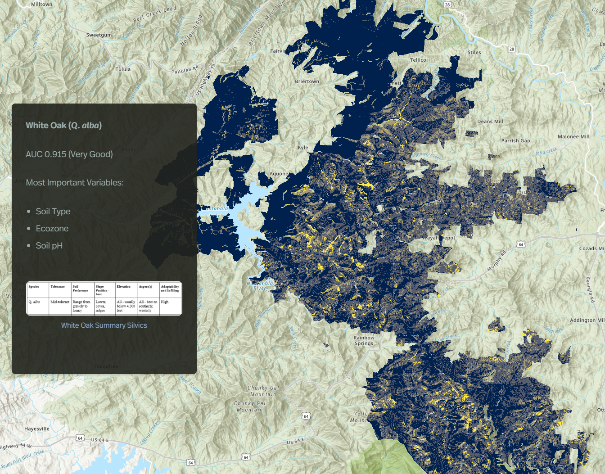
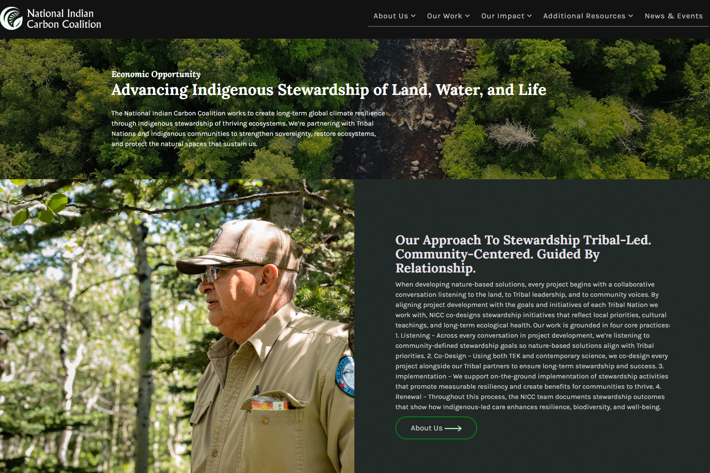

Akiing Azhenan project video
Translating to "Taking Back The Land" in Ojibwe, This is a featured video resource showcasing Bois Forte's rematration of 28,000 acres of ancestral forestlands via Carbon financing.
Watch on YouTubeA dedicated page for the most important external references tied to this work and public profile.
Translating to "Taking Back The Land" in Ojibwe, This is a featured video resource showcasing Bois Forte's rematration of 28,000 acres of ancestral forestlands via Carbon financing.
Watch on YouTubeResearch connected to oak regeneration in the southern Appalachian mountains and forestry field experience with the Forest Service.
Article Title: Mapping Oak (Quercus spp.) Regeneration Potential Within the Nantahala National Forest.
The official website for the ILTF-National Indian Carbon Coalition that contains additional project and informational resources.
Visit indiancarbon.org

